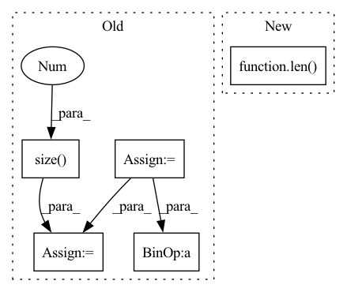

Pattern ID :30342
Before Change
// Define loss and metrics
criterion = nn.CrossEntropyLoss()
correct = 0
total = 0
loss = 0.0
// Evaluate the network
net.to(device)
net.eval()
with torch.no_grad():
for data in testloader:
images, labels = data[0].to(device), data[1].to(device)
outputs = net(images)
loss += criterion(outputs, labels).item()
_, predicted = torch.max(outputs.data, 1) // pylint: disable=no-member
total += labels.size(0 )
correct += (predicted == labels).sum().item()
accuracy = correct / total
return loss, accuracy
After Change
loss += criterion(outputs, labels).item()
_, predicted = torch.max(outputs.data, 1) // pylint: disable=no-member
correct += (predicted == labels).sum().item()
accuracy = correct / len( testloader.dataset)
return loss, accuracy
def main():In pattern: SUPERPATTERN
Frequency: 3
Non-data size: 5
Instances Fragment ID: 89815626
Project Name: adap/flower
Commit Name: 5718e989caee229579e5b1b22d0ea8f8cb7215ad
Time: 2023-02-20
Author: charles@adap.com
File Name: examples/pytorch_from_centralized_to_federated/cifar.py
M Class Name: AnonimousClass
N Class Name: AnonimousClass
M Method Name: test(3)
N Method Name: test(3)
M Parent Class:
N Parent Class:
M File Name: examples/pytorch_from_centralized_to_federated/cifar.py
N File Name: examples/pytorch_from_centralized_to_federated/cifar.py
M Start Line: 116
M End Line: 131
N Start Line: 116
N End Line: 128
Before Change
self._dtype = torch.float32
self._stride = stride
num_anchors = self._anchors.size(0 )
grid_x = self._cached_grids[0]
grid_y = self._cached_grids[1]
grids = self.generate_grids(grid_y, grid_x,
device=self._device, dtype=self._dtype).unsqueeze(0).repeat(num_anchors,1,1,1)
wh = torch.repeat_interleave(self._anchors, grid_y* grid_x, dim=0).reshape(num_anchors, grid_y, grid_x, 2)
prior_boxes = torch.cat([grids, wh], dim=-1)
prior_boxes[:, :, :, :2] += .5 // adjust to center
prior_boxes *= self._strideAfter Change
self.anchor_sizes = (torch.tensor(anchors) * img_size) / stride // between 0 < ? < max_grid
self.stride = stride
self.img_size = img_size
self.num_anchors = len( anchors)
def forward(self, fh: int, fw: int) -> torch.Tensor:
takes feature map h and w and reconstructs prior boxes as tensor
Args: Fragment ID: 89815640
Project Name: borhanmorphy/fastface
Commit Name: 90145f768cd9599edb0618b3faf3a69310ff82f8
Time: 2021-03-12
Author: borhano.f.42@gmail.com
File Name: fastface/arch/yolov4/anchor.py
M Class Name: Anchor
N Class Name: Anchor
M Method Name: __init__(4)
N Method Name: __init__(4)
M Parent Class: nn.Module
N Parent Class:
M File Name: fastface/arch/yolov4/anchor.py
N File Name: fastface/arch/yolov4/anchor.py
M Start Line: 10
M End Line: 30
N Start Line: 12
N End Line: 19
Before Change
Validate the network on the entire test set.
criterion = nn.CrossEntropyLoss()
correct = 0
total = 0
loss = 0.0
with torch.no_grad():
for data in testloader:
images, labels = data[0].to(device), data[1].to(device)
outputs = net(images)
loss += criterion(outputs, labels).item()
_, predicted = torch.max(outputs.data, 1) // pylint: disable=no-member
total += labels.size(0 )
correct += (predicted == labels).sum().item()
accuracy = correct / total
return loss, accuracy
After Change
loss += criterion(outputs, labels).item()
_, predicted = torch.max(outputs.data, 1) // pylint: disable=no-member
correct += (predicted == labels).sum().item()
accuracy = correct / len( testloader.dataset)
return loss, accuracy
Fragment ID: 89815647
Project Name: adap/flower
Commit Name: 5718e989caee229579e5b1b22d0ea8f8cb7215ad
Time: 2023-02-20
Author: charles@adap.com
File Name: examples/embedded_devices/utils.py
M Class Name: AnonimousClass
N Class Name: AnonimousClass
M Method Name: test(3)
N Method Name: test(3)
M Parent Class:
N Parent Class:
M File Name: examples/embedded_devices/utils.py
N File Name: examples/embedded_devices/utils.py
M Start Line: 166
M End Line: 177
N Start Line: 166
N End Line: 174